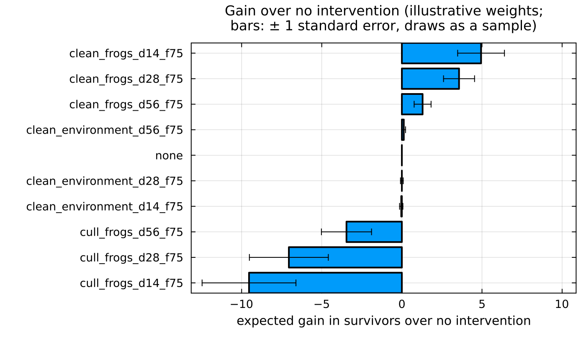
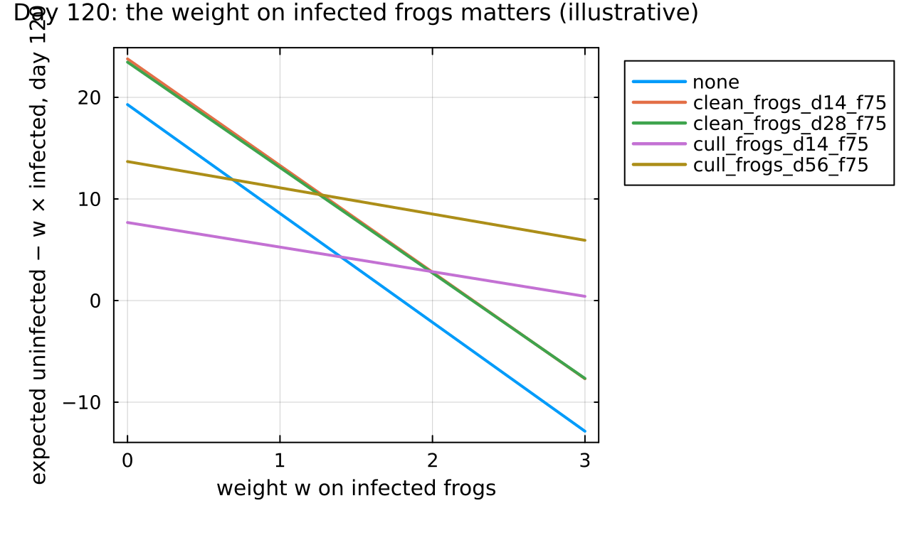

Bd epizootic response on the Drawert et al. (2017) model
Simon Frost
- Motivation
- The cached outcome table
- The draws are a design, not a posterior
- Payoffs and gains over no intervention
- By group
- Several rules
- Count or fraction of the pond
- The weight on infected frogs, and when the frogs are counted
- The value of perfect information, in frogs
- What is worth learning: EVPPI
- The value of a survey before the decision: EVSI
- An action the cached table does not hold
- The report
- What to take away
Motivation
Batrachochytrium dendrobatidis (Bd), the fungus that causes chytridiomycosis, has arrived at a pond that holds a susceptible frog population. One intervention can be mounted this season. Which, and when?
This vignette runs that question through the whole package: a cached table of model runs, utilities counted in frogs, gains over no intervention with their Monte Carlo errors, several decision rules, and the value of information, including the value of a survey made before the decision.
What this is and is not
- The model is the stochastic individual-based model of Drawert, Griesemer, Petzold and Briggs (2017, J. R. Soc. Interface 14:20170480, doi:10.1098/rsif.2017.0480), as implemented in
Chytridiomycosis.jl. The parameter points are the authors’. - The runs are ours, not the authors’:
Chytridiomycosis.jlran the model at 100 of the authors’ 2,132 parameter points under ten actions, 30 times each, and stores the result. Numbers read from that table are labelled from the cached table. - Everything else is illustrative: the weights on the draws, the utilities, the assay scales of the survey, and therefore every expected value, gain and value of information below. Nothing here is a published result, and none of it is advice for a real pond.
The cached outcome table
using DecisionAnalysis
using Chytridiomycosis: Chytridiomycosis, DrawertIBMProblem, DrawertIntervention, DrawertParameters,
SurveyObservation, SurveyPond, drawert_outcome_table, drawert_run_seed,
load_drawert_decision_draws, load_drawert_decisions, simulate_survey,
survey_loglikelihood
using Random: Xoshiro
include(joinpath("..", "_common.jl"))
table = drawert_outcome_table()OutcomeTable(100 draws × 10 actions × 30 replicates; outcomes survivors, uninfected, infected, uninfected_d120, infected_d120, uninfected_d365, infected_d365, initial_frogs, handled, treatment_deaths; 30000 runs ok, 0 failed, 0 absent)Chytridiomycosis.jl knows nothing of this package unless both are loaded; then a small extension inside it (its adapter) gives the stored runs as an OutcomeTable, with the parameters of the draws and their sampling weights. Runs with a failing status would be kept and counted; this table has none. Two sections below also read the rows themselves, one named tuple per run and per draw:
runs = load_drawert_decisions()
draws = load_drawert_decision_draws()
(rows=length(runs), columns=keys(first(runs)), draw=first(draws))(rows = 30000, columns = (:draw_id, :group, :variant, :action, :kind, :day, :fraction, :replicate, :seed, :surviving_fraction, :survivors, :outcome, :first_loss, :frogs_at_intervention, :applied, :handled, :treatment_deaths, :initial_frogs, :uninfected, :infected, :uninfected_d120, :infected_d120, :uninfected_d365, :infected_d365, :status, :seconds), draw = (draw_id = 37, group = "A", N = 62, γ = 5.73927902388375e-5, η = 17.8777834423818, ν0 = 0.0862707584165037, f = 0.530253593111411, σ0 = 0.478287360817194, μ = 1.03837436286965, load_growth_rate = 0.341402, weight = 32.23255813953488))run_counts(table)(runs = 30000, ok = 30000, failed = 0, absent = 0)The actions
Ten actions (from the cached table): no intervention, and one pulse at 75% coverage of one of three kinds on day 14, 28 or 56 after Bd arrives.
| label | meaning |
|---|---|
none | no intervention: the baseline |
clean_frogs_dNN_f75 | capture 75% of the frogs and clear their infection (antifungal treatment) |
cull_frogs_dNN_f75 | capture and kill 75% of the frogs |
clean_environment_dNN_f75 | remove 75% of the zoospores in the water |
The outcomes, and three modelling choices
For every run the table records the frogs alive at the end of the run, split into uninfected and infected (carrying any sporangia), and the same split on day 120 and on day 365. The choices that turn these into a utility are stated here because they are choices, not facts.
- Culled frogs are not survivors. A culled frog is dead. The table counts it in neither
uninfectednorinfected, so culling can only help through the frogs it spares. - Whether an infected but living frog counts. Three utilities are carried throughout: every survivor counts (
survivors); only uninfected frogs count (uninfected − 0 × infected); and uninfected minus infected (weight 1), which sets a frog that carries Bd against a clean one because it is a reservoir. The weight is swept in its own section. - Count or fraction. The initial pond size
Ndiffers between draws, from a handful of frogs to a couple of hundred. A count of frogs lets big ponds dominate the expectation; the fraction ofNsurviving treats every pond alike. The main analysis uses the count, because the owner’s currency is individuals; the fraction is shown beside it, and a section checks whether the two disagree.
survivors = IndividualsUtility(:survivors)
fraction = FunctionUtility(o -> o.survivors / o.initial_frogs; name=:surviving_fraction)
clean_only = InfectionUtility(; weight=0)
net_clean = InfectionUtility(; weight=1)
actions = action_labels(table)10-element Vector{Symbol}:
:none
:clean_frogs_d14_f75
:clean_frogs_d28_f75
:clean_frogs_d56_f75
:cull_frogs_d14_f75
:cull_frogs_d28_f75
:cull_frogs_d56_f75
:clean_environment_d14_f75
:clean_environment_d28_f75
:clean_environment_d56_f75The draws are a design, not a posterior
The 100 draws are a stratified sample of the authors’ 2,132 points, and those points are a space-filling design over plausible parameter ranges. They are not a posterior distribution and not a prior that anyone elicited. The authors sort the points into five groups, A to E, by what the model does there without intervention (A: the frogs always go extinct; D: Bd usually dies out; B, C and E in between or variable). The sample takes more than their share from the small groups, and the weight column undoes that: it is the number of design points each sampled draw stands for.
Assumption. Using these weights as a belief says: every one of the 2,132 design points is equally likely to be the pond at hand. That is a convenient reference, not knowledge. The section on groups shows how the decision changes if the group is known, which is the form in which a manager would most plausibly hold better information.
belief = SampleBelief(table)
groups = parameter_draws(belief).group
weights = Float64.(probabilities(belief))
md_table(["group", "sampled draws", "weight of the group", "mean N"],
[[g, count(==(g), groups), sum(weights[groups .== g]),
sum(parameter_draws(belief).N[groups .== g]) / count(==(g), groups)]
for g in ("A", "B", "C", "D", "E")])| group | sampled draws | weight of the group | mean N |
|---|---|---|---|
| A | 43 | 0.65 | 102.28 |
| B | 12 | 0.05 | 92.42 |
| C | 17 | 0.1 | 54.76 |
| D | 23 | 0.19 | 78.87 |
| E | 5 | 0.01 | 79 |
(draws=length(belief), effective_sample_size=effective_sample_size(belief))(draws = 100, effective_sample_size = 81.99482891894394)Group A, where the frogs go extinct if nothing is done, carries about two thirds of the weight.
Payoffs and gains over no intervention
payoff_table averages the utility over the 30 replicates of each cell and keeps the standard error of each cell apart. The expected payoff over the draws then has two errors, and they answer different questions:
- simulation only: the simulator’s noise with the 100 draws held fixed. This is the error of the number for this design.
- draws as a sample: the error if the 100 draws are regarded as a random sample of the 2,132 points. It is much larger, because ponds differ far more than replicates.
problem = DecisionProblem(table, survivors; baseline=:none)
gains = DecisionProblem(payoff_table(table, survivors; baseline=:none), belief)
level = expected_utility_estimates(problem)
gain = expected_utility_estimates(gains)
md_table(["action", "expected survivors", "gain over no intervention", "error: simulation only",
"error: draws as a sample"],
[[l.action, Float64(l.value), Float64(g.value), g.simulation_error, g.standard_error]
for (l, g) in zip(level, gain)])| action | expected survivors | gain over no intervention | error: simulation only | error: draws as a sample |
|---|---|---|---|---|
none | 17.06 | 0 | 0 | 0 |
clean_frogs_d14_f75 | 22 | 4.94 | 0.34 | 1.46 |
clean_frogs_d28_f75 | 20.63 | 3.57 | 0.31 | 0.97 |
clean_frogs_d56_f75 | 18.36 | 1.29 | 0.13 | 0.53 |
cull_frogs_d14_f75 | 7.52 | -9.54 | 0.14 | 2.93 |
cull_frogs_d28_f75 | 10.01 | -7.05 | 0.18 | 2.46 |
cull_frogs_d56_f75 | 13.6 | -3.46 | 0.16 | 1.56 |
clean_environment_d14_f75 | 17.02 | -0.04 | 0.09 | 0.1 |
clean_environment_d28_f75 | 17.06 | 0 | 0.07 | 0.09 |
clean_environment_d56_f75 | 17.18 | 0.12 | 0.06 | 0.11 |
The gains are computed replicate by replicate against the none run with the same seed, so their simulation error is that of the paired differences.
Under the design weights, cleaning frogs early gains about five frogs per pond over no intervention, and the gain shrinks as the pulse is delayed. Culling loses frogs. Cleaning the environment once does nothing measurable.
The same in the other utilities, and as a fraction of the initial population:
utilities = ["survivors" => survivors, "uninfected (w = 0)" => clean_only,
"uninfected − infected (w = 1)" => net_clean, "fraction of N surviving" => fraction]
gain_of(u) = [Float64(e.value)
for e in expected_utility_estimates(DecisionProblem(payoff_table(table, u; baseline=:none),
belief))]
labelled_table("gain over no intervention", actions, first.(utilities),
reduce(hcat, [gain_of(u) for (_, u) in utilities]); digits=3)| gain over no intervention | survivors | uninfected (w = 0) | uninfected − infected (w = 1) | fraction of N surviving |
|---|---|---|---|---|
none | 0 | 0 | 0 | 0 |
clean_frogs_d14_f75 | 4.941 | 4.956 | 4.972 | 0.063 |
clean_frogs_d28_f75 | 3.568 | 3.585 | 3.602 | 0.044 |
clean_frogs_d56_f75 | 1.294 | 1.296 | 1.299 | 0.02 |
cull_frogs_d14_f75 | -9.538 | -9.88 | -10.222 | -0.144 |
cull_frogs_d28_f75 | -7.052 | -7.549 | -8.045 | -0.09 |
cull_frogs_d56_f75 | -3.457 | -3.816 | -4.174 | -0.047 |
clean_environment_d14_f75 | -0.039 | -0.039 | -0.039 | 0.002 |
clean_environment_d28_f75 | 0 | -0.004 | -0.009 | 0.002 |
clean_environment_d56_f75 | 0.121 | 0.121 | 0.12 | 0.002 |
At the end of a run the three count utilities nearly coincide: by then a pond has usually lost either its frogs or its Bd, so few survivors are infected.
order = sortperm([Float64(g.value) for g in gain])
plt = Plots.bar(String.(actions[order]), [Float64(gain[i].value) for i in order];
yerror=[gain[i].standard_error for i in order], legend=false, permute=(:x, :y),
xlabel="", ylabel="expected gain in survivors over no intervention",
title="Gain over no intervention (illustrative weights;\nbars: ± 1 standard error, draws as a sample)",
size=(700, 420), left_margin=6Plots.mm)
png_figure(plt)
By group
The group is what a manager would most want to know. conditional_problem collapses the draws onto it: the expected payoff of each action within each group.
by_group = conditional_problem(problem, :group)
gain_over_baseline(by_group)PayoffTable{Float64}: 10 actions × 5 states
| action | A | B | C | D | E |
|---|---|---|---|---|---|
none | 0.0 | 0.0 | 0.0 | 0.0 | 0.0 |
clean_frogs_d14_f75 | 3.57674 | 23.4722 | 12.0627 | 0.875362 | 0.3 |
clean_frogs_d28_f75 | 1.8155 | 17.2556 | 13.7588 | 0.413043 | 0.3 |
clean_frogs_d56_f75 | 0.124031 | 6.38333 | 8.0549 | 0.265217 | 0.313333 |
cull_frogs_d14_f75 | 2.56434 | 13.3639 | -10.3353 | -57.9971 | -4.79333 |
cull_frogs_d28_f75 | 1.4186 | 10.9306 | -8.41373 | -40.9754 | -5.36667 |
cull_frogs_d56_f75 | 0.642636 | 7.28611 | -6.9098 | -18.7638 | -4.89333 |
clean_environment_d14_f75 | -0.000775194 | 0.158333 | -0.594118 | 0.0652174 | 0.28 |
clean_environment_d28_f75 | -0.000775194 | -0.422222 | 0.15098 | 0.0289855 | 0.106667 |
clean_environment_d56_f75 | 0.0 | 0.0305556 | 1.07059 | 0.0318841 | 0.24 |
function group_gain(g)
members = state_labels(belief)[groups .== g]
return expected_utility_estimates(restrict_scenarios(gains, members))
end
cells = Dict(g => group_gain(g) for g in ("A", "B", "C", "D", "E"))
md_table(vcat("gain (standard error, draws as a sample)", ["group $g" for g in ("A", "B", "C", "D", "E")]),
[vcat(a, [string(round(Float64(cells[g][i].value); digits=1), " (",
round(cells[g][i].standard_error; digits=1), ")")
for g in ("A", "B", "C", "D", "E")]) for (i, a) in enumerate(actions)])| gain (standard error, draws as a sample) | group A | group B | group C | group D | group E |
|---|---|---|---|---|---|
none | 0.0 (0.0) | 0.0 (0.0) | 0.0 (0.0) | 0.0 (0.0) | 0.0 (0.0) |
clean_frogs_d14_f75 | 3.6 (1.9) | 23.5 (7.2) | 12.1 (4.9) | 0.9 (0.1) | 0.3 (0.1) |
clean_frogs_d28_f75 | 1.8 (1.0) | 17.3 (5.0) | 13.8 (5.3) | 0.4 (0.1) | 0.3 (0.2) |
clean_frogs_d56_f75 | 0.1 (0.1) | 6.4 (2.7) | 8.1 (4.4) | 0.3 (0.1) | 0.3 (0.2) |
cull_frogs_d14_f75 | 2.6 (0.9) | 13.4 (2.5) | -10.3 (4.9) | -58.0 (9.1) | -4.8 (4.2) |
cull_frogs_d28_f75 | 1.4 (0.7) | 10.9 (2.0) | -8.4 (4.9) | -41.0 (9.5) | -5.4 (4.2) |
cull_frogs_d56_f75 | 0.6 (0.5) | 7.3 (1.7) | -6.9 (4.0) | -18.8 (6.8) | -4.9 (4.2) |
clean_environment_d14_f75 | -0.0 (0.0) | 0.2 (0.6) | -0.6 (0.9) | 0.1 (0.0) | 0.3 (0.2) |
clean_environment_d28_f75 | -0.0 (0.0) | -0.4 (0.4) | 0.2 (0.8) | 0.0 (0.0) | 0.1 (0.2) |
clean_environment_d56_f75 | 0.0 (0.0) | 0.0 (0.0) | 1.1 (1.0) | 0.0 (0.0) | 0.2 (0.1) |
best_in(g) = decide(restrict_scenarios(by_group, [Symbol(g)]), MaxExpectedUtility())
md_table(["group", "weight", "best action", "its gain over no intervention"],
[[g, Float64(probabilities(by_group.belief)[i]), first_choice(best_in(g)),
Float64(maximum(gain_over_baseline(by_group).Q[:, i]))]
for (i, g) in enumerate(String.(state_labels(by_group)))])| group | weight | best action | its gain over no intervention |
|---|---|---|---|
| A | 0.65 | clean_frogs_d14_f75 | 3.58 |
| B | 0.05 | clean_frogs_d14_f75 | 23.47 |
| C | 0.1 | clean_frogs_d28_f75 | 13.76 |
| D | 0.19 | clean_frogs_d14_f75 | 0.88 |
| E | 0.01 | clean_frogs_d56_f75 | 0.31 |
The size of the gain changes greatly with the group; the best kind of action does not.
- In group A no frog survives without intervention. Early treatment rescues a few (under four frogs per pond on average, with a standard error of about two), and so, to a lesser degree, does an early cull, which thins the hosts.
- In group B early treatment saves over twenty frogs per pond, and even a cull gains, for the same reason as in A.
- In group C treatment on day 14 or day 28 saves twelve to fourteen frogs; the two days cannot be told apart at this sample size. Culling loses frogs.
- In group D Bd usually dies out by itself. Treatment adds less than one frog, and an early cull destroys nearly sixty frogs per pond that would have lived.
- Group E has five sampled draws; its row is too noisy to read much into.
Groups B and C carry about 15% of the weight and most of the gain. Treating the frogs early is best, or within error of best, in every group. What the group changes is how much is at stake, and how bad the wrong action (a cull in group D) would be.
Pulses that were not applied
One feature of the cached table must be kept in view wherever a late cull looks harmless. As in the authors’ code, a pulse is skipped once the frogs or Bd have gone. The share of runs in which the pulse was not applied (from the cached table):
group_of = Dict(d.draw_id => d.group for d in draws)
function share_skipped(kind, day, g)
rows = [r for r in runs if r.kind == kind && r.day == day && group_of[r.draw_id] == g]
return count(r -> r.applied === false, rows) / length(rows)
end
md_table(["group", "day 14", "day 28", "day 56"],
[[g, share_skipped("cull_frogs", 14.0, g), share_skipped("cull_frogs", 28.0, g),
share_skipped("cull_frogs", 56.0, g)] for g in ("A", "B", "C", "D", "E")])| group | day 14 | day 28 | day 56 |
|---|---|---|---|
| A | 0 | 0.05 | 0.61 |
| B | 0 | 0 | 0.01 |
| C | 0 | 0.11 | 0.26 |
| D | 0 | 0.43 | 0.72 |
| E | 0 | 0 | 0 |
In groups C and D, where Bd has often died out by day 56, most late pulses never happen: no frog is culled in those runs, and handled is zero. A manager who did not know that Bd had gone would have culled. So the table makes a late cull look much less harmful than it would be in practice, and the small losses shown for cull_frogs_d56_f75 in groups C and D are a lower bound on the harm. The same applies, in the other direction, to late treatment: where the pulse is skipped the action costs nothing and gains nothing.
Several rules
Expected utility under the design weights is one rule. Others answer to different attitudes to the uncertainty.
Over the draws. The worst case over 100 sampled draws is uninformative here: in group A every action leaves no frogs, so every action has the same worst case. CVaR looks at the worst share of the weight and has the same problem until the share passes the weight of group A.
over_draws = ["expected survivors" => MaxExpectedUtility(), "maximin over draws" => Maximin(),
"CVaR, worst 20% of the weight" => DecisionRule(CVaR(0.2)),
"CVaR, worst 80% of the weight" => DecisionRule(CVaR(0.8)),
"minimax regret over draws" => MinimaxRegret()]
md_table(["rule", "chosen", "tied actions"],
[[name, first_choice(decide(problem, rule)), length(decide(problem, rule).chosen)]
for (name, rule) in over_draws])| rule | chosen | tied actions |
|---|---|---|
| expected survivors | clean_frogs_d14_f75 | 1 |
| maximin over draws | none | 10 |
| CVaR, worst 20% of the weight | none | 10 |
| CVaR, worst 80% of the weight | clean_frogs_d14_f75 | 1 |
| minimax regret over draws | clean_frogs_d14_f75 | 1 |
When a rule ties across all ten actions, first_choice is the first in table order, which is none: the rule gives no reason to act. The result also says that a worst case over a sample depends on which draws were sampled.
Over the groups as scenarios. A manager who refuses to weight the groups can treat them as five scenarios with no probabilities. Maximin then asks for the best worst-group payoff, and minimax regret for the smallest worst-group shortfall from the best action for that group.
scenario_problem = DecisionProblem(by_group.payoff, ScenarioSet(state_labels(by_group));
baseline=:none)
maximin = decide(scenario_problem, Maximin())
regret = decide(scenario_problem, MinimaxRegret())
md_table(["action", "worst group payoff", "largest regret over groups"],
[[a, Float64(maximin.scores[i]), Float64(regret.scores[i])]
for (i, a) in enumerate(actions)])| action | worst group payoff | largest regret over groups |
|---|---|---|
none | 0 | 23.47 |
clean_frogs_d14_f75 | 3.58 | 1.7 |
clean_frogs_d28_f75 | 1.82 | 6.22 |
clean_frogs_d56_f75 | 0.12 | 17.09 |
cull_frogs_d14_f75 | 2.57 | 58.87 |
cull_frogs_d28_f75 | 1.42 | 41.85 |
cull_frogs_d56_f75 | 0.64 | 20.67 |
clean_environment_d14_f75 | 0 | 23.31 |
clean_environment_d28_f75 | 0 | 23.89 |
clean_environment_d56_f75 | 0 | 23.44 |
(maximin=maximin.chosen, minimax_regret=regret.chosen)(maximin = [:clean_frogs_d14_f75], minimax_regret = [:clean_frogs_d14_f75])With groups as scenarios both rules choose early treatment of the frogs. Its worst group is A, where it still leaves a few survivors and no intervention leaves none, and it is never more than about two frogs behind the best action for any group.
Minimax regret depends on the menu of actions: regret is measured against the best action on offer in each scenario, so removing an action, even one that is never chosen, can change the choice. The result carries that note:
regret.details.note"Regret is measured against the best feasible action in each state, so this rule depends on the menu of actions: adding or removing an action, even one that is never chosen, can change the choice (independence of irrelevant alternatives fails)."no_culls = DecisionProblem(by_group.payoff, ScenarioSet(state_labels(by_group));
baseline=:none, feasible=a -> !startswith(String(a), "cull"))
(with_culls=first_choice(regret), without_culls=first_choice(decide(no_culls, MinimaxRegret())))(with_culls = :clean_frogs_d14_f75, without_culls = :clean_frogs_d14_f75)Here taking the culls off the menu leaves the choice as it was. That is a property of this table, not of the rule.
Count or fraction of the pond
fraction_problem = DecisionProblem(table, fraction; baseline=:none)
reversals = rank_reversals(problem, fraction_problem)
(best_by_count=first_choice(decide(problem, MaxExpectedUtility())),
best_by_fraction=first_choice(decide(fraction_problem, MaxExpectedUtility())),
pairs_of_actions_that_swap=length(reversals), top_changed=any(r -> r.top_changed, reversals))(best_by_count = :clean_frogs_d14_f75, best_by_fraction = :clean_frogs_d14_f75, pairs_of_actions_that_swap = 3, top_changed = false)reversals3-element Vector{@NamedTuple{actions::Tuple{Symbol, Symbol}, top_changed::Bool}}:
(actions = (:none, :clean_environment_d14_f75), top_changed = 0)
(actions = (:none, :clean_environment_d28_f75), top_changed = 0)
(actions = (:clean_environment_d14_f75, :clean_environment_d28_f75), top_changed = 0)The best action is the same on both scales. The pairs that swap are among the environmental cleaning actions and no intervention, whose differences are within the simulation error. The count and the fraction do not disagree about anything that matters here, so the count is used from here on.
The weight on infected frogs, and when the frogs are counted
The infection utility is uninfected − w × infected. Expected utility is linear in w, so policy_regions finds the values of w at which the best action changes exactly. The answer depends on when the frogs are counted.
function regions_at(uninfected, infected)
base = DecisionProblem(individuals_payoff(table, uninfected), belief; baseline=:none)
return policy_regions(base, -individuals_payoff(table, infected); from=0, to=3)
end
evaluation = ["end of the run" => (:uninfected, :infected), "day 120" => (:uninfected_d120, :infected_d120),
"day 365" => (:uninfected_d365, :infected_d365)]
md_table(["counted at", "from w", "to w", "best action"],
[[when, Float64(r.from), Float64(r.to), r.actions]
for (when, (u, i)) in evaluation for r in regions_at(u, i)]; digits=3)| counted at | from w | to w | best action |
|---|---|---|---|
| end of the run | 0 | 3 | clean_frogs_d14_f75 |
| day 120 | 0 | 1.277 | clean_frogs_d14_f75 |
| day 120 | 1.277 | 3 | cull_frogs_d56_f75 |
| day 365 | 0 | 3 | clean_frogs_d14_f75 |
function gains_at(u, i, w)
return gain_of(InfectionUtility(; uninfected=u, infected=i, weight=w))
end
labelled_table("gain over no intervention", actions,
["end, w = 0", "end, w = 1", "day 120, w = 0", "day 120, w = 1", "day 365, w = 0",
"day 365, w = 1"],
reduce(hcat, [gains_at(u, i, w) for (_, (u, i)) in evaluation for w in (0, 1)]);
digits=2)| gain over no intervention | end, w = 0 | end, w = 1 | day 120, w = 0 | day 120, w = 1 | day 365, w = 0 | day 365, w = 1 |
|---|---|---|---|---|---|---|
none | 0 | 0 | 0 | 0 | 0 | 0 |
clean_frogs_d14_f75 | 4.96 | 4.97 | 4.5 | 4.72 | 4.47 | 4.55 |
clean_frogs_d28_f75 | 3.59 | 3.6 | 4.18 | 4.52 | 3.14 | 3.22 |
clean_frogs_d56_f75 | 1.3 | 1.3 | 2.69 | 2.56 | 0.91 | 1.04 |
cull_frogs_d14_f75 | -9.88 | -10.22 | -11.61 | -3.31 | -10.37 | -11.2 |
cull_frogs_d28_f75 | -7.55 | -8.04 | -9.07 | -0.82 | -8.02 | -9.24 |
cull_frogs_d56_f75 | -3.82 | -4.17 | -5.61 | 2.52 | -4.26 | -5.21 |
clean_environment_d14_f75 | -0.04 | -0.04 | 0.24 | 0.26 | 0 | -0.01 |
clean_environment_d28_f75 | 0 | -0.01 | 0.08 | 0.11 | 0.04 | 0.05 |
clean_environment_d56_f75 | 0.12 | 0.12 | 0.07 | 0.09 | 0.08 | 0.11 |
At the end of a run and at one year the weight does not matter: early treatment is best for every w from 0 to 3. At day 120 it does. Four months in, many ponds still hold infected frogs, and under w = 1 each of them counts against. Early treatment remains best in expectation at w = 0 and at w = 1, but a late cull, which removes infected frogs, now shows a gain at w = 1, and for w above about 1.3 it overtakes treatment. That gain should be read with the caveat above: the late cull is skipped in the runs where it would have done most harm. It also depends on valuing the removal of an infected frog at more than the life of a clean one.
ws = 0:0.25:3
sweep = weight_sweep(w -> DecisionProblem(table, InfectionUtility(; uninfected=:uninfected_d120,
infected=:infected_d120, weight=w);
baseline=:none), ws)
shown = [:none, :clean_frogs_d14_f75, :clean_frogs_d28_f75, :cull_frogs_d14_f75, :cull_frogs_d56_f75]
plt = Plots.plot(; xlabel="weight w on infected frogs", ylabel="expected uninfected − w × infected, day 120",
title="Day 120: the weight on infected frogs matters (illustrative)")
for a in shown
i = findfirst(==(a), actions)
Plots.plot!(plt, collect(ws), [Float64(row.scores[i]) for row in sweep]; label=String(a))
end
png_figure(plt)
The value of perfect information, in frogs
EVPI is the expected gain from learning which draw the pond is before choosing. The plain estimate applies the definition to the table. Its cells are means of 30 noisy runs, so its perfect-information term is a maximum over noise at every draw; the cell-noise bias estimates that inflation, using the achieved correlation between actions from the common random numbers.
rho = crn_correlation(table, survivors)
plain = evpi(problem, SampleAverage(); noise_correlation=rho)
linear = SplineRegression(; knots=0, degree=1)
regression = evpi(DecisionProblem(problem.payoff,
SampleBelief(belief.states,
(; group=groups, growth=parameter_draws(belief).load_growth_rate,
N=parameter_draws(belief).N), belief.weights)),
linear)
(noise_correlation_between_actions=rho,)┌ Warning: The evpi estimate by SplineRegression, 3.50015, is above the EVPI of the same sample, 1.64364, by more than twice its standard error. No information is worth more than perfect information, so the fitted values are not conditional means here (too few draws for the fit, or a misspecified regression) and the estimate should not be used. The standard error does not show this. Use fewer knots or parameters, StrongOakley() or Grouping(; bins), or more draws.
└ @ DecisionAnalysis ~/Projects/decisiontheory/DecisionAnalysis.jl/src/voi_sample.jl:623
(noise_correlation_between_actions = 0.3046910749975807,)voi_table(["EVPI, plain sample average" => plain,
"regression on group, Bd growth rate and N (not reliable here)" => regression];
digits=2)| estimate | value | standard error | act-now bias | cell-noise bias |
|---|---|---|---|---|
| EVPI, plain sample average | 1.64 | 0.59 | 0 | 0.19 |
| regression on group, Bd growth rate and N (not reliable here) | 3.5 | 0.34 | 0 | - |
Perfect knowledge of the pond is worth about one and a half frogs per pond (standard error 0.6) under the design weights, beside an expected seventeen survivors with no intervention and five gained by acting now. The standard error is large because 100 draws are few.
The plain estimate is the one to use here. The variance split below shows that the cells are almost free of simulation noise, so there is little for a regression to smooth. The regression row is shown as a warning: 100 draws spread over five very different groups cannot support a regression of ten payoff surfaces, and a linear fit on three parameters returns a figure above the plain EVPI, which the value of learning three parameters cannot be. A regression estimate is only as good as its fit.
On the selection bias: the best reported expected value (early treatment) is a maximum over ten sample means and so, on average, overstates what the chosen action is worth; the act-now bias column estimates by how much. EVPI is a difference of two terms that are each biased upwards, and the sign of its own bias is not determined.
md_table(["action", "total variance", "simulation", "parameter", "parameter share"],
[[v.action, v.total, v.simulation, v.parameter, v.parameter_share]
for v in variance_components(problem)]; digits=3)| action | total variance | simulation | parameter | parameter share |
|---|---|---|---|---|
none | 1579.674 | 1.341 | 1578.332 | 0.999 |
clean_frogs_d14_f75 | 1708.316 | 10.971 | 1697.345 | 0.994 |
clean_frogs_d28_f75 | 1653.191 | 10.187 | 1643.004 | 0.994 |
clean_frogs_d56_f75 | 1634.372 | 2.821 | 1631.551 | 0.998 |
cull_frogs_d14_f75 | 133.122 | 1.076 | 132.046 | 0.992 |
cull_frogs_d28_f75 | 380.03 | 3.449 | 376.581 | 0.991 |
cull_frogs_d56_f75 | 1005.687 | 3.387 | 1002.3 | 0.997 |
clean_environment_d14_f75 | 1584.061 | 0.854 | 1583.208 | 0.999 |
clean_environment_d28_f75 | 1585.105 | 1.02 | 1584.085 | 0.999 |
clean_environment_d56_f75 | 1584.26 | 1.334 | 1582.925 | 0.999 |
Nearly all the variance of the cell means is between draws. Thirty replicates per cell are enough; the binding limit is the number of draws.
What is worth learning: EVPPI
focal_belief = SampleBelief(belief.states,
merge(parameter_draws(belief),
(; log_N=log.(parameter_draws(belief).N))), belief.weights)
focal = DecisionProblem(problem.payoff, focal_belief; baseline=:none)
coarse = SplineRegression(; knots=1)
partial = ["group (cell means)" => evppi(focal, :group),
"Bd growth rate λ, spline" => evppi(focal, :load_growth_rate, coarse),
"Bd growth rate λ, Strong and Oakley, 5 blocks" =>
evppi(focal, :load_growth_rate, StrongOakley(; blocks=5)),
"initial frogs N, spline on log N" => evppi(focal, :log_N, coarse),
"initial frogs N, Sadatsafavi" => evppi(focal, :log_N, Sadatsafavi()),
"EVPI, plain (for scale)" => plain]
voi_table(partial; digits=2)| estimate | value | standard error | act-now bias | cell-noise bias |
|---|---|---|---|---|
| group (cell means) | 0.18 | 0.18 | 0 | - |
| Bd growth rate λ, spline | 0.59 | 0.33 | 0 | - |
| Bd growth rate λ, Strong and Oakley, 5 blocks | 0.41 | 0.32 | 0 | - |
| initial frogs N, spline on log N | 0.29 | 0.34 | 0 | - |
| initial frogs N, Sadatsafavi | 0.37 | 0.31 | 0 | - |
| EVPI, plain (for scale) | 1.64 | 0.59 | 0 | 0.19 |
None of the partial values is clearly different from zero at this sample size, and that is itself the finding: under the design weights early treatment of the frogs is best, or within error of best, in every group, so knowing the group, the growth rate or the pond size would seldom change the action. The single-parameter methods are used with few blocks and one knot because there are only 100 draws.
The conclusion is different for a utility under which the best action does change between groups. Counting at day 120 with w = 1 is one:
day120 = DecisionProblem(table, InfectionUtility(; uninfected=:uninfected_d120,
infected=:infected_d120, weight=1); baseline=:none)
day120_focal = DecisionProblem(day120.payoff, focal_belief; baseline=:none)
voi_table(["day 120, w = 1: EVPPI of group" => evppi(day120_focal, :group),
"day 120, w = 1: EVPPI of Bd growth rate λ" => evppi(day120_focal, :load_growth_rate, coarse),
"day 120, w = 1: EVPI, plain" =>
evpi(day120, SampleAverage(); noise_correlation=crn_correlation(table, net_clean))];
digits=2)| estimate | value | standard error | act-now bias | cell-noise bias |
|---|---|---|---|---|
| day 120, w = 1: EVPPI of group | 6.32 | 3.41 | 0.82 | - |
| day 120, w = 1: EVPPI of Bd growth rate λ | 3.7 | 3.54 | 0.82 | - |
| day 120, w = 1: EVPI, plain | 8.97 | 3.3 | 0.82 | 0.21 |
by_group_120 = conditional_problem(day120, :group)
md_table(["group", "best action at day 120, w = 1"],
[[g, first_choice(decide(restrict_scenarios(by_group_120, [g]), MaxExpectedUtility()))]
for g in state_labels(by_group_120)])| group | best action at day 120, w = 1 |
|---|---|
A | cull_frogs_d14_f75 |
B | clean_frogs_d14_f75 |
C | clean_frogs_d28_f75 |
D | clean_frogs_d14_f75 |
E | cull_frogs_d14_f75 |
There the group is worth several frogs, with a wide standard error: under that utility the best action is a cull in group A and treatment in groups B, C and D.
The value of a survey before the decision: EVSI
A manager cannot observe the group. A survey can be run instead.
The survey. On day 7 after Bd is detected, before any action, skin swabs are taken from 10 frogs (or all of them in a smaller pond), each assayed by qPCR, and two water samples are assayed for environmental DNA. Chytridiomycosis.jl provides the observation model (simulate_survey, which draws such data from a run of the model) and its likelihood (survey_loglikelihood).
Assumptions, and they are large. The assay scales have no published values for this model: ρ, the Bd copies recovered per sporangium on a swabbed frog; κ, the eDNA copies per unit of zoospore density; and σe, the standard deviation of log eDNA copies. The reference values used here are ρ = 1, κ = 1 and σe = 1. They are placeholders, and the sensitivity of the result to them is shown.
Method. Importance sampling needs the likelihood of a simulated data set under each draw. The model is stochastic, so the likelihood of a draw integrates over its runs: each draw is run 30 times to day 7 with the seeds of the cached table (the same pond histories as the outcome runs up to that day), three data sets are simulated from the first three runs of every draw, and the likelihood of a data set under a draw is the average over that draw’s 30 runs.
const solve = Chytridiomycosis.solve
survey_day = 7.0
ids = [d.draw_id for d in draws]
parameters = [DrawertParameters(id) for id in ids]
histories = [[solve(DrawertIBMProblem(p; tfinal=survey_day, saveat=[survey_day], save_loads=true);
rng=Xoshiro(drawert_run_seed(id, r))) for r in 1:30]
for (id, p) in zip(ids, parameters)]
(draws=length(histories), runs_per_draw=length(first(histories)))(draws = 100, runs_per_draw = 30)logmeanexp(x) = (m = maximum(x); isfinite(m) ? m + log(sum(exp.(x .- m)) / length(x)) : -Inf)
function survey_study(obs; swabs=10, edna=2, datasets_per_draw=3, seed=1)
rng = Xoshiro(seed)
L = zeros(datasets_per_draw * length(ids), length(ids))
data_weights = repeat(weights ./ datasets_per_draw; inner=datasets_per_draw)
row = 0
for (k, p) in enumerate(parameters), r in 1:datasets_per_draw
pond = SurveyPond(; N=p.N, days=[survey_day], swabs=min(swabs, p.N), edna)
data = simulate_survey(rng, p, histories[k][r], obs, pond)
row += 1
for (j, q) in enumerate(parameters)
L[row, j] = logmeanexp([survey_loglikelihood(data, q, run, obs) for run in histories[j]])
end
end
return ImportanceSampling(L; weights=data_weights)
end
reference = SurveyObservation(; ρ=1.0, κ=1.0, σe=1.0)
study = survey_study(reference)
survey = evsi(problem, study)
voi_table(["EVSI of the day-7 survey (10 swabs, 2 eDNA samples)" => survey,
"EVPI, plain (the ceiling)" => plain]; digits=2)| estimate | value | standard error | act-now bias | cell-noise bias |
|---|---|---|---|---|
| EVSI of the day-7 survey (10 swabs, 2 eDNA samples) | 0.42 | 0.33 | 0 | - |
| EVPI, plain (the ceiling) | 1.64 | 0.59 | 0 | 0.19 |
The effective sample sizes are part of the estimate, and its standard error has two parts, from the simulated data sets and from the 100 draws:
surveyVOIEstimate(evsi by ImportanceSampling: 0.422605 ± 0.333572 (standard error); act-now bias 0.0; posterior effective sample size: median 9.93627, smallest 1.00589 of 100 draws)(standard_error=survey.standard_error,
from_data_sets=survey.details.datasets_standard_error,
from_draws=survey.details.draws_standard_error)(standard_error = 0.3335717774214111, from_data_sets = 0.04617170710850643, from_draws = 0.3303608695877369)How to read this. The effective sample sizes are small: after a typical simulated survey about ten of the 100 draws carry the posterior weight, and after some a single one does. In that regime the estimate drifts upwards towards the plain EVPI. The honest reading is an order of magnitude: under these assumptions a day-7 survey is worth a few tenths of a frog per pond, perhaps a quarter of what perfect knowledge would be worth, and small beside the five frogs gained by simply treating early. The standard error covers both the simulated data sets and the fact that there are only 100 draws, and the second part is by far the larger: it is nearly as large as the estimate, so with 100 draws the value of the survey is not distinguished from zero. It is a first-order calculation, too: with effective sample sizes this small it still understates the uncertainty, and it does not measure the upward drift.
Two further limits. The survey also tells the manager about this pond’s epidemic trajectory, not only its parameters; the payoffs here are averages over replicates, so that part of the survey’s value is not counted. And the number of swabs taken reveals N for small ponds, which the likelihood does not use.
Sensitivity to the assay scales and the design
variants = ["reference: ρ = 1, κ = 1, σe = 1" => (reference, (;)),
"swab yield ρ = 0.1" => (SurveyObservation(; ρ=0.1, κ=1.0, σe=1.0), (;)),
"swab yield ρ = 10" => (SurveyObservation(; ρ=10.0, κ=1.0, σe=1.0), (;)),
"eDNA yield κ = 0.01" => (SurveyObservation(; ρ=1.0, κ=0.01, σe=1.0), (;)),
"eDNA noise σe = 2" => (SurveyObservation(; ρ=1.0, κ=1.0, σe=2.0), (;)),
"swabs only" => (reference, (; edna=0)),
"eDNA only" => (reference, (; swabs=0)),
"30 swabs, 2 eDNA" => (reference, (; swabs=30))]
results = [name => evsi(problem, survey_study(obs; design...)) for (name, (obs, design)) in variants]
md_table(["assumption or design", "EVSI (frogs)", "standard error", "median effective sample size"],
[[name, Float64(e.value), e.standard_error, e.details.median_ess] for (name, e) in results])| assumption or design | EVSI (frogs) | standard error | median effective sample size |
|---|---|---|---|
| reference: ρ = 1, κ = 1, σe = 1 | 0.42 | 0.33 | 9.94 |
| swab yield ρ = 0.1 | 0.33 | 0.31 | 10.26 |
| swab yield ρ = 10 | 0.38 | 0.26 | 9.49 |
| eDNA yield κ = 0.01 | 0.42 | 0.33 | 16.06 |
| eDNA noise σe = 2 | 0.29 | 0.32 | 15.12 |
| swabs only | 0.05 | 0.05 | 50.99 |
| eDNA only | 0.23 | 0.28 | 25.43 |
| 30 swabs, 2 eDNA | 0.76 | 0.48 | 8.12 |
Across a hundredfold range of the swab yield, a hundredfold lower eDNA yield and a doubling of the eDNA noise, the estimate stays between about 0.3 and 0.4 frogs per pond. The design matters more than the scales. On day 7 few frogs carry Bd, so ten swabs alone say little, and under the reference scales most of the value comes from the water samples; thirty swabs with the water samples do better than ten.
These comparisons are suggestive only. The standard errors, which include the error from having 100 draws, are as large as the differences between most rows; the rows with the most informative data have the smallest effective sample sizes and so the most upward drift, and the assay scales are placeholders. A sharper answer needs more draws (the full 2,132 points), so that the importance weights are not carried by a few of them, and assay scales measured for the system at hand.
enbs is not used here: a survey’s cost would have to be stated in frogs, additively, and swabbing does not kill frogs in this model.
An action the cached table does not hold
Every analysis above is confined to the ten actions that were run in advance. Early cleaning is the best of them, and its gain shrinks with delay, which raises a question the table cannot answer: is a second cleaning worth making? The adapter answers it without rerunning anything that is stored. drawert_outcome_table(; actions) runs the new action at the same 100 draws, 30 times each, with the seeds of the stored runs (run_seed of outcomes), and joins the result to the stored table (combine_actions). A new run is then the stored run of the same draw and replicate up to the first day on which the two actions differ, so the comparison with a stored action has common random numbers, as the comparisons among stored actions have.
The new action cleans 75% of the frogs on day 14 and again on day 28. This is 3,000 runs of a year of the model, about half an hour on one core. The runs below are ours and new; they are not in the cached table.
two_cleans = [DrawertIntervention(:clean_frogs, 14, 0.75),
DrawertIntervention(:clean_frogs, 28, 0.75)]
extended = drawert_outcome_table(; actions=["clean_frogs_d14_d28_f75" => two_cleans])OutcomeTable(100 draws × 11 actions × 30 replicates; outcomes survivors, uninfected, infected, uninfected_d120, infected_d120, uninfected_d365, infected_d365, initial_frogs, handled, treatment_deaths; 33000 runs ok, 0 failed, 0 absent)shown = [:none, :clean_frogs_d14_f75, :clean_frogs_d28_f75, :clean_frogs_d14_d28_f75]
estimates(utility, baseline) =
filter(e -> e.action in shown,
expected_utility_estimates(DecisionProblem(payoff_table(extended, utility; baseline),
belief)))
over_none = estimates(survivors, :none)
over_one = estimates(survivors, :clean_frogs_d14_f75)
handled = estimates(IndividualsUtility(:handled), nothing)
md_table(["action", "gain over no intervention", "error: simulation only",
"error: draws as a sample", "gain over one clean on day 14",
"error: draws as a sample ", "frogs handled"],
[[a.action, Float64(a.value), a.simulation_error, a.standard_error, Float64(b.value),
b.standard_error, Float64(h.value)]
for (a, b, h) in zip(over_none, over_one, handled)])| action | gain over no intervention | error: simulation only | error: draws as a sample | gain over one clean on day 14 | error: draws as a sample | frogs handled |
|---|---|---|---|---|---|---|
none | 0 | 0 | 0 | -4.94 | 1.46 | 0 |
clean_frogs_d14_f75 | 4.94 | 0.34 | 1.46 | 0 | 0 | 69.17 |
clean_frogs_d28_f75 | 3.57 | 0.31 | 0.97 | -1.37 | 0.92 | 64.88 |
clean_frogs_d14_d28_f75 | 9.96 | 0.44 | 2.38 | 5.02 | 1.33 | 125.5 |
The rows of the stored actions are the numbers of the tables above: nothing stored was run again. Under the design weights the second cleaning adds about five survivors per pond to the five of the first, and the difference between two cleanings and one is about four of its standard errors, a comparison made run by run against stored runs with the same seeds. The price is in the last column: nearly twice as many frogs caught and treated. No cost per frog handled is assumed here, so the two columns are shown side by side and not combined.
By group, the second cleaning does most where the first already did most:
extended_problem = DecisionProblem(extended, survivors; baseline=:none)
by_group_extended = gain_over_baseline(conditional_problem(extended_problem, :group))
keep = [findfirst(==(a), action_labels(by_group_extended)) for a in shown]
labelled_table("gain over no intervention", shown, state_labels(by_group_extended),
by_group_extended.Q[keep, :]; digits=2)| gain over no intervention | A | B | C | D | E |
|---|---|---|---|---|---|
none | 0 | 0 | 0 | 0 | 0 |
clean_frogs_d14_f75 | 3.58 | 23.47 | 12.06 | 0.88 | 0.3 |
clean_frogs_d28_f75 | 1.82 | 17.26 | 13.76 | 0.41 | 0.3 |
clean_frogs_d14_d28_f75 | 7.45 | 52.2 | 21.86 | 0.94 | 0.84 |
Adding an action changes the value of information as well as the choice. With the eleventh action the plain EVPI falls, because one action is now best at more of the draws and there is less to gain from knowing which draw the pond is:
(evpi_ten_actions=evpi(problem), evpi_eleven_actions=evpi(extended_problem),
chosen=decide(extended_problem, MaxExpectedUtility()).chosen)(evpi_ten_actions = 1.6436409610362723, evpi_eleven_actions = 0.8775775004094442, chosen = [:clean_frogs_d14_d28_f75])The sections above are left on the ten stored actions: they are the analysis of the cached table, and this section shows how to go beyond it.
The report
DecisionReport(problem; parameters=[:group], regression=nothing, noise_correlation=rho,
assumptions=["The draws are a stratified sample of a space-filling design, weighted to " *
"stand for its 2,132 points; treating that as a belief is an assumption.",
"Runs are ours, of the Drawert et al. (2017) model; nothing here is a " *
"published result.",
"A pulse is skipped once the frogs or Bd have gone, which makes late " *
"culls look less harmful than they would be."])DecisionReport: 10 actions × 100 states, SampleBelief Baseline (no intervention): none
Scores by rule (* marks the chosen actions)
| action | MaxExpectedUtility | Maximin | Maximax | MinimaxRegret |
|---|---|---|---|---|
none | 17.061 | 0 * | 195 | 83 |
clean_frogs_d14_f75 | 22.0021 * | 0 * | 195.767 * | 25.6667 * |
clean_frogs_d28_f75 | 20.6292 | 0 * | 195.633 | 42.5333 |
clean_frogs_d56_f75 | 18.3552 | 0 * | 195 | 65.8667 |
cull_frogs_d14_f75 | 7.52257 | 0 * | 49.1333 | 146.633 |
cull_frogs_d28_f75 | 10.0088 | 0 * | 103.533 | 147.1 |
cull_frogs_d56_f75 | 13.6039 | 0 * | 195 | 108.767 |
clean_environment_d14_f75 | 17.0218 | 0 * | 195 | 84.9333 |
clean_environment_d28_f75 | 17.061 | 0 * | 195 | 84.9333 |
clean_environment_d56_f75 | 17.1817 | 0 * | 195 | 83.0333 |
First choice by rule
| rule | first choice | baseline | tied |
|---|---|---|---|
MaxExpectedUtility | clean_frogs_d14_f75 | [not the baseline] | |
Maximin | none | [the baseline] | none, cleanfrogsd14f75, cleanfrogsd28f75, cleanfrogsd56f75, cullfrogsd14f75, cullfrogsd28f75, cullfrogsd56f75, cleanenvironmentd14f75, cleanenvironmentd28f75, cleanenvironmentd56_f75 |
Maximax | clean_frogs_d14_f75 | [not the baseline] | |
MinimaxRegret | clean_frogs_d14_f75 | [not the baseline] |
Minimax regret depends on the menu of actions: adding or removing an action, even one that is never chosen, can change its choice.
Monte Carlo standard errors (shown beside the values, never folded into them)
| action | expected utility | standard error | simulation only | gain over baseline | standard error of gain |
|---|---|---|---|---|---|
none | 17.061 | 3.73027 | 0.0886898 | 0.0 | 0.0 |
clean_frogs_d14_f75 | 22.0021 | 3.96533 | 0.330578 | 4.94106 | 1.45982 |
clean_frogs_d28_f75 | 20.6292 | 3.85312 | 0.310208 | 3.5682 | 0.968109 |
clean_frogs_d56_f75 | 18.3552 | 3.80206 | 0.133713 | 1.29414 | 0.528292 |
cull_frogs_d14_f75 | 7.52257 | 1.13065 | 0.114943 | -9.53845 | 2.92864 |
cull_frogs_d28_f75 | 10.0088 | 1.85261 | 0.169775 | -7.05225 | 2.46276 |
cull_frogs_d56_f75 | 13.6039 | 2.98158 | 0.159675 | -3.45709 | 1.56382 |
clean_environment_d14_f75 | 17.0218 | 3.73351 | 0.0697655 | -0.0392542 | 0.103429 |
clean_environment_d28_f75 | 17.061 | 3.7346 | 0.077978 | -5.55253e-5 | 0.0866045 |
clean_environment_d56_f75 | 17.1817 | 3.7367 | 0.0884416 | 0.120711 | 0.10934 |
Standard error: the draws taken as a random sample of the belief. Simulation only: the simulator’s noise with the draws held fixed (- when the table has no standard errors).
Variance of the payoff across draws
| action | total | simulation | parameter | parameter share |
|---|---|---|---|---|
none | 1579.67 | 1.34129 | 1578.33 | 0.999151 |
clean_frogs_d14_f75 | 1708.32 | 10.9711 | 1697.34 | 0.993578 |
clean_frogs_d28_f75 | 1653.19 | 10.187 | 1643.0 | 0.993838 |
clean_frogs_d56_f75 | 1634.37 | 2.82127 | 1631.55 | 0.998274 |
cull_frogs_d14_f75 | 133.122 | 1.0757 | 132.046 | 0.991919 |
cull_frogs_d28_f75 | 380.03 | 3.44933 | 376.581 | 0.990924 |
cull_frogs_d56_f75 | 1005.69 | 3.38702 | 1002.3 | 0.996632 |
clean_environment_d14_f75 | 1584.06 | 0.853664 | 1583.21 | 0.999461 |
clean_environment_d28_f75 | 1585.11 | 1.02006 | 1584.09 | 0.999356 |
clean_environment_d56_f75 | 1584.26 | 1.33446 | 1582.93 | 0.999158 |
Expected gain over the baseline (none)
| action | expected gain |
|---|---|
none | 0.0 |
clean_frogs_d14_f75 | 4.94106 |
clean_frogs_d28_f75 | 3.5682 |
clean_frogs_d56_f75 | 1.29414 |
cull_frogs_d14_f75 | -9.53845 |
cull_frogs_d28_f75 | -7.05225 |
cull_frogs_d56_f75 | -3.45709 |
clean_environment_d14_f75 | -0.0392542 |
clean_environment_d28_f75 | -5.55253e-5 |
clean_environment_d56_f75 | 0.120711 |
Regret profile
| action | max regret | expected regret |
|---|---|---|
none | 83 | 6.58471 |
clean_frogs_d14_f75 | 25.6667 | 1.64364 |
clean_frogs_d28_f75 | 42.5333 | 3.0165 |
clean_frogs_d56_f75 | 65.8667 | 5.29056 |
cull_frogs_d14_f75 | 146.633 | 16.1232 |
cull_frogs_d28_f75 | 147.1 | 13.637 |
cull_frogs_d56_f75 | 108.767 | 10.0418 |
clean_environment_d14_f75 | 84.9333 | 6.62396 |
clean_environment_d28_f75 | 84.9333 | 6.58476 |
clean_environment_d56_f75 | 83.0333 | 6.46399 |
Value of information
| estimate | value | standard error | act-now bias | cell-noise bias |
|---|---|---|---|---|
| EVPI | 1.64364 | 0.588737 | 0.0 | 0.186724 |
| EVPPI of group (Grouping) | 0.175938 | 0.177791 | 0.0 | - |
Errors and biases are beside the values, not in them. The act-now bias is the upward bias of the best reported value from maximising sample means: the chosen action is on average worth less than its score. The cell-noise bias is the upward bias of the perfect-information value from maximising noisy cells. A value of information is a difference of two such terms, so the sign of its bias is not determined.
Assumptions
- Payoffs are conditional expected utilities of each action in each state; higher is better.
- State-wise rules (maximin, maximax, Laplace, Hurwicz, minimax regret) ignore probabilities and range over the draws in the sample, whatever their weights, so their scores depend on which draws were sampled; Laplace is not shown for a sample.
- Regret is measured against the best feasible action in each state, so it changes when the set of actions changes. Minimax regret therefore depends on the menu of actions: adding or removing an action, even one that is never chosen, can change its choice.
- Tied actions are all reported; the first choice is the tied action that comes first in the payoff table.
- Expected utility, expected regret and EVPI are under the single stated prior; EVPI is the value of learning the state exactly and at no cost.
- The baseline (no intervention) is none; gains are payoffs minus the payoff of the baseline in the same state.
- The belief is a sample of 100 draws (effective sample size 81.99): expected utility, regret and every value of information are estimates. Standard errors are shown beside them and are not folded into any value; they treat the draws as a random sample of the belief.
- Selection bias (the optimiser’s curse) is reported, not removed. It belongs to the best reported value and the chosen action: a maximum of estimates overstates, on average, what the chosen action is worth. The act-now value and the value with perfect information are each biased upwards (by sampled draws and by noisy cells); EVPI is their difference, so the sign of its bias is not determined in general. With exact payoffs and sampled draws, the plain EVPI is biased downwards.
- The draws are a stratified sample of a space-filling design, weighted to stand for its 2,132 points; treating that as a belief is an assumption.
- Runs are ours, of the Drawert et al. (2017) model; nothing here is a published result.
- A pulse is skipped once the frogs or Bd have gone, which makes late culls look less harmful than they would be.
What to take away
About the problem, under the stated assumptions (all illustrative):
- Under the design weights, treating the frogs early (day 14) is the best single action: about five more survivors per pond than no intervention, from an expected seventeen. The gain shrinks with delay.
- A second treatment on day 14 and again on day 28, an action that is not in the cached table and was run for this vignette, gains about ten, for nearly twice as many frogs handled.
- Culling loses frogs on every utility that counts survivors. It shows a gain only when infected frogs are counted against (w = 1) part-way through the epidemic, and that gain is flattered by pulses that were skipped.
- A single cleaning of the environment does nothing measurable.
- The stakes change with the group, the best kind of action hardly does: early treatment rescues a few frogs in group A, many in groups B and C, and is barely needed in group D, where a cull would be a disaster.
- Perfect information is worth about one and a half frogs per pond (standard error 0.6), and a day-7 survey a few tenths of a frog, with errors that are understated. Acting early matters more than learning more.
- The choices that could change these conclusions are the weights on the draws, the weight on infected frogs, and the evaluation day. All three are shown.
About the package:
- The model package gives its stored runs as an
OutcomeTablethrough an adapter of its own, loaded only when this package is; a new action is run with the stored seeds and joined to them (combine_actions), so it shares random numbers with the stored ones. - Standard errors are reported beside every value, in two kinds, and are never folded in.
conditional_problemgives the payoff by group; aScenarioSetover the groups gives maximin and minimax regret without weights.policy_regionsfinds the switch points of a weight exactly.evsiwithImportanceSamplingneeds only a log-likelihood, and reports the effective sample sizes that say how far to trust it.
Not done here: the structural variants of the model (the authors’ Nu and Sigma models) are not in the cached table, so structural uncertainty is not analysed.